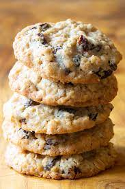

How To Make Oatmeal Raisin Cookies

Ingredients
- 1 cup (2 sticks) unsalted butter, softened, OR 1 cup shortening
- 1 cup brown sugar (light or dark), packed
- 1/2 cup plus 2 tablespoons (10 tablespoons) granulated sugar
- 2 large eggs
- 1 tablespoon vanilla extract
- 1 1/2 cups all-purpose flour
- 1/2 teaspoon salt
- 1 teaspoon baking soda
- 1 teaspoon ground cinnamon
- 1/2 teaspoon freshly grated nutmeg
- 1 1/2 cups raisins
- 1/2 cup chopped walnuts, optional
- 3 cups rolled oats (old-fashioned or quick; do NOT use instant)
Directions
- Preheat the oven to 350°F. Grease 2 large cookie sheets or line with Silpat or parchment paper.
- In a large mixing bowl, beat the butter until creamy. Add the brown sugar and white sugar and beat until fluffy, about 3 minutes. Beat in the eggs one at a time. Add the vanilla extract.
- Mix the flour, salt, baking soda, cinnamon, and nutmeg together in medium bowl. Stir the dry ingredients into the butter-sugar mixture. Stir in the raisins and nuts. Stir in the oats.
- Spoon out the dough by large tablespoonfuls onto the prepared cookie sheets, leaving at least 2 inches between each cookie.
- Bake until the edges of the cookies turn golden brown, about 10 to 12 minutes. If baking 2 cookie sheets at once, swap their positions on the racks mid-bake. Repeat with the remaining cookie dough.
- Cool 1 minute on the cookie sheets. Then carefully remove them, using a metal spatula, to a wire rack. Cool completely. They will be quite soft until completely cooled. Store tightly covered at room temperature for up to 5 days.
*Goes great for dessert after a meal of Hot Dog Soup and Honey Wheat Bread
<-Back to index